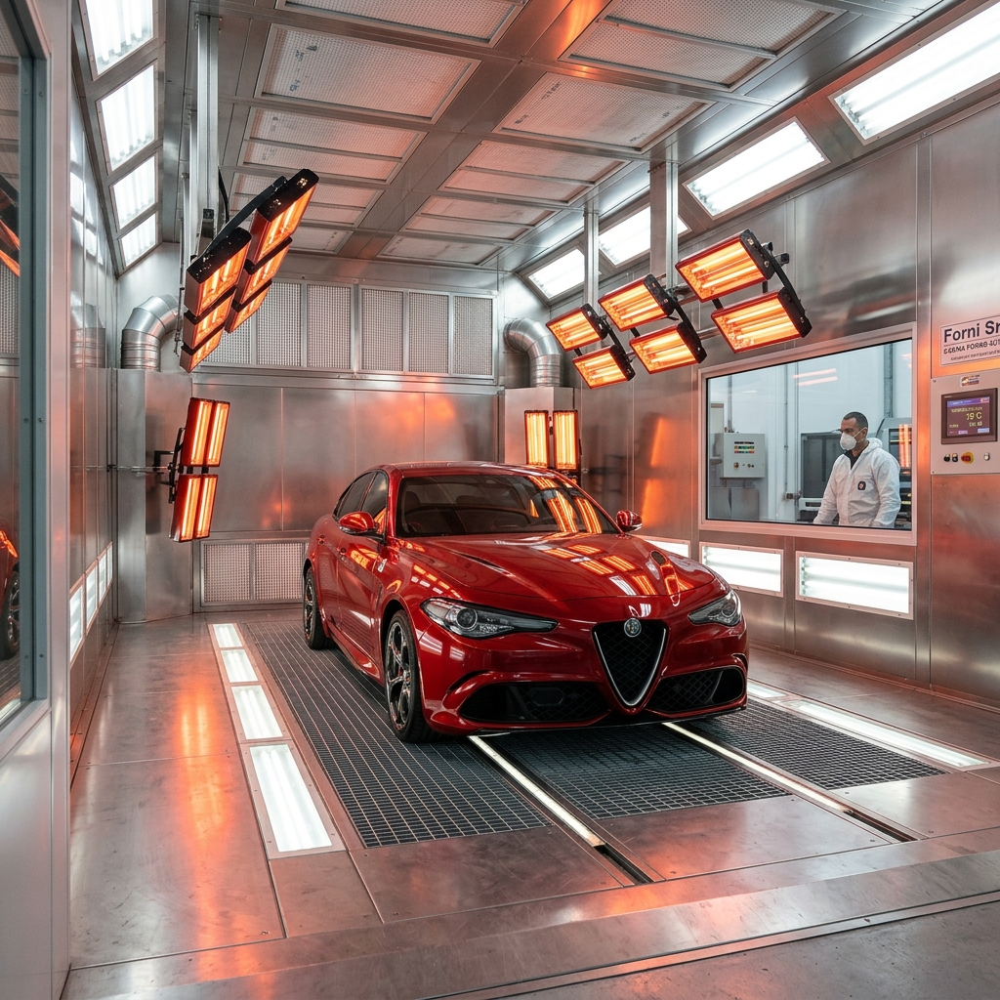

Firinli Boya ile Kusursuz Sonucular
Antalya oto boya sektöründe NeTT, fırınlı boya teknolojisini sanatla birlestiriyor. Geleneksel açik alan boyamalarinin aksine, tozdan, nemden ve dis etkenlerden tamamen arindirilmis özel kabinlerimizde islem yapiyoruz. Bu sayede boya yüzeyinde "pütürlesme" veya "akma" gibi sorunlar asla yasanmaz.
Kullandigimiz PPG ve Standox gibi dünya lideri boya markalari, aracinizin orijinal renk koduna göre bilgisayar ortaminda hazirlanir. ÖÖzellikle günes yanigi onarımi ve komple boyama projelerinde, Antalya'nin zorlu hava kosullarina (yogun UV ve sicaklik) karsi en dirençli vernikleri tercih ediyoruz.

Teknolojik Üstünlüklerimiz
- Dijital Spektrofotometre: Boya tonunu %100 dogrulukla analiz eder.
- Italyan Firin Sistemi: Boyanin metal ile kemiklesmesini saglayan homojen isitma.
- Kuru Zimparça: Paslanmayi önleyen susuz yüzey hazirligi.
- UV Filtreli Vernik: Günes yaniklarina karsi ömür boyu koruma kalkani.
Neden Akdeniz Sanayi?
Akdeniz Sanayi Sitesi, Antalya'nin otomotiv kalbidir. NeTT olarak bu lokasyonda en lüks araç segmentlerine (BMW, Mercedes, Audi, Porsche) hizmet veren butik bir merkez konumundayiz. Lara veya Konyaalti'ndan gelen müsterilerimiz için vale ve araç teslim hizmetleri de sunmaktayiz.
.jpeg)
.jpeg)
ARACINIZ IÇIN TEKLIF ALIN
Oto boya işlemi için atölyemize gelerek ücretsiz ekspertiz yaptirabilir veya WhatsApp'tan hizli fiyat alabilirsiniz.